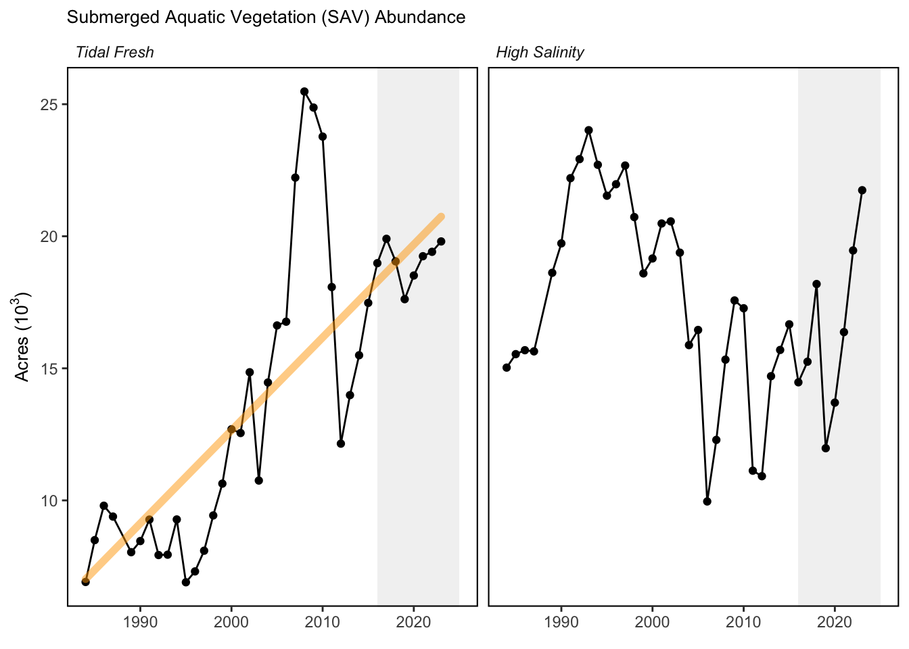

SMART Indicator Report: Submerged Aquatic Vegetation
1 Descriptive Section
1.2 Indicator name
Submerged Aquatic Vegetation
Includes variable(s): Baywide, Mesohaline, Oligohaline, Polyhaline, Tidal
1.3 Indicator brief description
The data provided here are the 1984-2023 area distribution and percent coverage of submerged aquatic vegetation in the Chesapeake Bay and its tributaries. That area is measured and calculated from photo-interpreted aerial imagery taken during surveys conducted in the growing season.
1.4 Indicator visualization
The Mesohaline and Polyhaline zones saw significant increases in SAV, and there was also a modest increase in the Tidal Fresh zone. The Mesohaline zone increased by 21% relative to 2022 (2,665 hectares or 6,584 acres), mainly driven by the 1,048 hectare increase in the Tangier Sound segments. The Polyhaline zone increased 12% relative to 2022 (923 hectares or 2,281 acres), including a record 445 hectares from the Mobjack Bay segment and 404 hectares from the Eastern Lower Chesapeake Bay. This is the most SAV reported for the Polyhaline Zone since 1997 and the 4th consecutive increase in coverage in this zone. The Tidal Fresh zone had a 3% increase (159 hectares or 393 acres) while the Oligohaline zone showed a large 54% decrease (1,516 hectares or 3,746 acres), due to heavy losses in the middle Potomac and the Gunpowder River in Maryland on the west side of the Bay. The increases in the Mesohaline zone largely reflect recovery following the SAV crash in 2019. Those losses in 2019 were largely due to declines in widgeongrass which is prone to boom and bust cycles of expansion and retraction. For example, in 2018, the Mesohaline and northern Polyhaline salinity zones widgeongrass increased and eelgrass was observed by the survey for the first time in an extensive region east of Tangier Island, but these gains were reversed in 2019. The subsequent decline we observed in 2019 mirrors a similar rapid increase in widgeongrass in 2001 and 2002 that was followed by about a 50% decline in 2003. Gains in the Polyhaline are driven in part by recovery of widgeongrass following the 2019 crash but also by expansion of eelgrass into deeper waters, in some areas expanding beyond historically observed meadow boundaries.

2 SMART Attribute Section
2.1 Indicator documentation
2.1.1 Are indicators available for others to use (data downloadable)?
Yes
2.1.1.1 Where can indicators be found?
Data: https://noaa-edab.github.io/ecodata/index.html
Description: https://noaa-edab.github.io/catalog/SAV.html
Technical documentation: https://noaa-edab.github.io/tech-doc/SAV.html
2.1.1.2 How often are they updated? Are future updates likely?
[need sequential look at datasets for update frequency. Future requires judgement]
2.1.1.3 Who is the contact?
Christoper J. Patrick (cpatrick@vims.edu), David J. Wilcox (dwilcox@vims.edu)
2.1.2 Gather indicator statistics
2.1.2.1 Units
Indicator | Units |
|---|---|
Baywide | no Units field |
Mesohaline | no Units field |
Oligohaline | no Units field |
Polyhaline | no Units field |
Tidal | no Units field |
2.1.2.2 Length of time series, start and end date, periodicity
General overview: 1984-2023, annual
Indicator specifics:
Indicator | EPU | StartYear | EndYear | NumYears | MissingYears |
|---|---|---|---|---|---|
Baywide | MAB | 1984 | 2023 | 39 | 1 |
Mesohaline | MAB | 1984 | 2023 | 39 | 1 |
Oligohaline | MAB | 1984 | 2023 | 39 | 1 |
Polyhaline | MAB | 1984 | 2023 | 39 | 1 |
Tidal | MAB | 1984 | 2023 | 39 | 1 |
2.1.2.3 Spatial location, scale and extent
General overview: The data covers the tidal Chesapeake Bay region.
Indicator specifics:
Indicator | EPU |
|---|---|
Baywide | MAB |
Mesohaline | MAB |
Oligohaline | MAB |
Polyhaline | MAB |
Tidal | MAB |
2.1.3 Are methods clearly documented to obtain source data and calculate indicators?
Yes
2.1.3.1 Can the indicator be calculated from current documentation?
The data is available in excel spreadsheet form using the Downloads Data (.xlsx) link. The data used is in the “Salinity zone totals” tab and the hectares column can be extracted for each salinity zone.
The analysis and methods are described at the Chesapeake progress page.
2.1.4 Are indicator underlying source data linked or easy to find?
Source data are NOT publicly available. Please email David Wilcox at dwilcox@vims.edu for further information about the submerged aquatic vegetation indicator.
2.1.4.1 Where are source data stored?
Data for this indicator comes from the aerial survey of submerged aquatic vegetation coverage in the Chesapeake Bay: https://www.chesapeakeprogress.com/abundant-life/sav.
2.1.4.2 How/by whom are source data updated? Are future updates likely?
David Wilcox dwilcox@vims.edu
[likelihood of source data updates requires judgement, enter by hand]
2.2 Indicator analysis/testing or history of use
2.2.1 What decision or advice processes are the indicators currently used in?
Underwater grass beds are critical to the Chesapeake Bay ecosystem. They provide food and shelter to fish and wildlife, sequester carbon, add oxygen to the water, absorb nutrient pollution, reduce shoreline erosion and help suspended particles of sediment settle to the bottom. Because they are sensitive to pollution but quick to respond to improvements in water quality, underwater grass abundance is a good indicator of the Bay’s health. Before Europeans colonized the region, up to 600,000 acres of underwater grasses may have grown along the shorelines of the Bay and its tributaries. By the mid-1980s, nutrient and sediment pollution had weakened or eliminated many of these grass beds. While climate change, shoreline hardening and stressors that reduce water clarity will continue to impact our restoration success, many of these stressors can be managed with on-the-ground efforts to reduce pollution and research has shown that nutrient reductions made under the Chesapeake Bay Total Maximum Daily Load (Bay TMDL) have played a critical role in the overall underwater grass recovery documented since the Bay-wide aerial survey began in 1984.
2.2.2 What implications of the indicators are currently listed?
The outlook toward achieving the outcome goal is uncertain. Gains from 2022 to 2023 are positive, indicating an on-course trajectory, but these gains don’t yet offset the recent major declines observed in 2019. Additional years of positive trajectory will help clarify whether this recent gain in 2023 is the start of a new positive trend toward higher levels of SAV across the Bay.
2.2.4 Have the indicators been tested to ensure they respond proportionally to a change in the underlying process?
No
3 SMART rating
Category | Indicator | Element | Attribute | Rating | ElementRating | OverallRating |
|---|---|---|---|---|---|---|
Habitat-Living | Submerged Aquatic Vegetation | Specific | Described | 1.0 | 0.5000000 | 0.55 |
Habitat-Living | Submerged Aquatic Vegetation | Specific | Units | 0.0 | 0.5000000 | 0.55 |
Habitat-Living | Submerged Aquatic Vegetation | Specific | Spatial | 1.0 | 0.5000000 | 0.55 |
Habitat-Living | Submerged Aquatic Vegetation | Specific | Uncertainty | 0.0 | 0.5000000 | 0.55 |
Habitat-Living | Submerged Aquatic Vegetation | Specific | Methods | 1.0 | 0.5000000 | 0.55 |
Habitat-Living | Submerged Aquatic Vegetation | Specific | Code | 0.0 | 0.5000000 | 0.55 |
Habitat-Living | Submerged Aquatic Vegetation | Measurable | Available | 1.0 | 0.8333333 | 0.55 |
Habitat-Living | Submerged Aquatic Vegetation | Measurable | Online | 1.0 | 0.8333333 | 0.55 |
Habitat-Living | Submerged Aquatic Vegetation | Measurable | Contact | 1.0 | 0.8333333 | 0.55 |
Habitat-Living | Submerged Aquatic Vegetation | Measurable | SourceDat | 0.0 | 0.8333333 | 0.55 |
Habitat-Living | Submerged Aquatic Vegetation | Measurable | SourceAvail | 1.0 | 0.8333333 | 0.55 |
Habitat-Living | Submerged Aquatic Vegetation | Measurable | SourceContact | 1.0 | 0.8333333 | 0.55 |
Habitat-Living | Submerged Aquatic Vegetation | Achievable | Tested | 0.0 | 0.0000000 | 0.55 |
Habitat-Living | Submerged Aquatic Vegetation | Achievable | Sensitivity | 0.0 | 0.0000000 | 0.55 |
Habitat-Living | Submerged Aquatic Vegetation | Achievable | TimeLag | 0.0 | 0.0000000 | 0.55 |
Habitat-Living | Submerged Aquatic Vegetation | Relevant | Advice | 1.0 | 0.6666667 | 0.55 |
Habitat-Living | Submerged Aquatic Vegetation | Relevant | Implications | 1.0 | 0.6666667 | 0.55 |
Habitat-Living | Submerged Aquatic Vegetation | Relevant | TargThresh | 0.0 | 0.6666667 | 0.55 |
Habitat-Living | Submerged Aquatic Vegetation | Timebound | Frequency | 1.0 | 0.7500000 | 0.55 |
Habitat-Living | Submerged Aquatic Vegetation | Timebound | Updated | 0.5 | 0.7500000 | 0.55 |
3.1 Comments
[Fill below by hand once above data complete]
3.1.1 Additional potential links to management in addition to uses listed above
3.1.2 What additional work would be needed for the Council to use the indicator?
3.1.3 What issues are caused if there is a gap or delay in data underlying the indicator